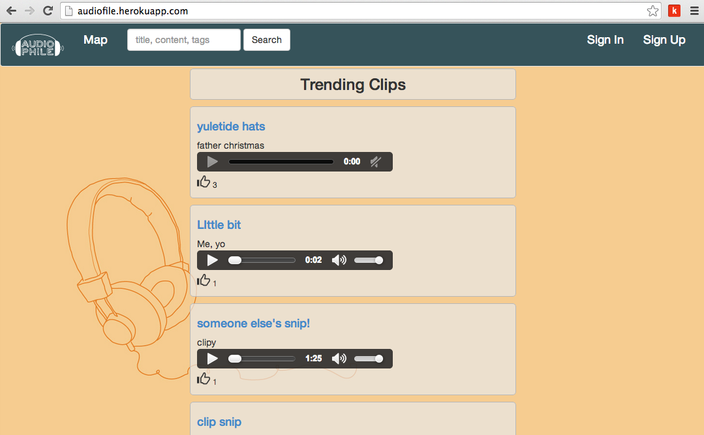

My Projects
-
Tarot Cards

This was my first Ruby on Rails project. Tarot Cards are believed to speak about a person's current situation in life and answer some questions on a philosophical and spiritual level. When the User picks a random card they are then required to sign in or sogn up in order to see the meaning of that card. There is also some JavaScript employed in this project.
-
Audiofile
This project uses a variety of technologies such as Rails, Paperclip, S3, MediaStream, Sunspot etc. It allows users to upload, share, and upvote audio, create snippets of soundclips, search for user content, make playlists and view a map of user activity worldwide.